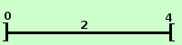

|
sviluppo indicare in ℜ un intorno completo aperto di ampiezza 2 del punto 2 darne una rappresentazione Dal punto 2, sulla retta ℜ devo prendere due unita' verso sinistra ed arrivo sul punto 0 ed anche due unita' verso destra ed arrivo sul punto 4 Dovendo l' intorno essere aperto gli estremi non saranno compresi, quindi Le rappresentazioni sopra sono 2: "Melius abundare...." la prima e' la rappresentazione mediante insiemi la seconda (in rosso) e' la rappresentazione mediante intervalli e' possibile aggiungere la rappresentazione grafica: disegni il segmento da 0 a 4 e ci metti ai bordi le parentesi quadre con le punte verso l'esterno perche' l'intervallo e' aperto  |